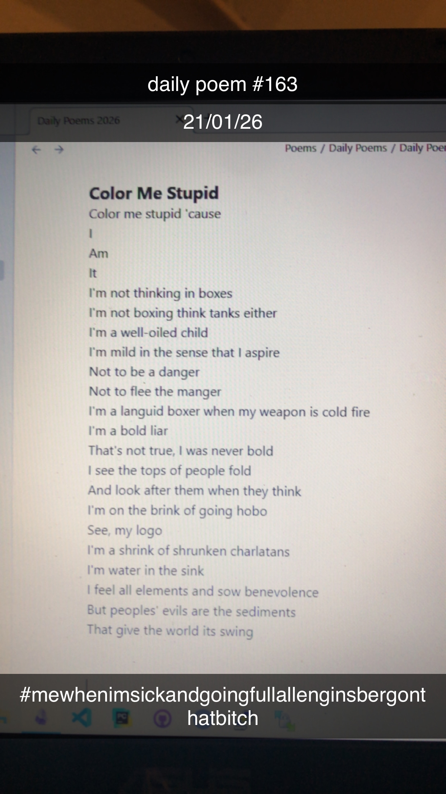

Color Me Stupid
[163]Color me stupid 'cause
I
Am
It
I'm not thinking in boxes
I'm not boxing think tanks either
I'm a well-oiled child
I'm mild in the sense that I aspire
Not to be a danger
Not to flee the manger
I'm a languid boxer when my weapon is cold fire
I'm a bold liar
That's not true, I was never bold
I see the tops of people fold
And look after them when they think
I'm on the brink of going hobo
See, my logo
I'm a shrink of shrunken charlatans
I'm water in the sink
I feel all elements and sow benevolence
But peoples' evils are the sediments
That give the world its swing
